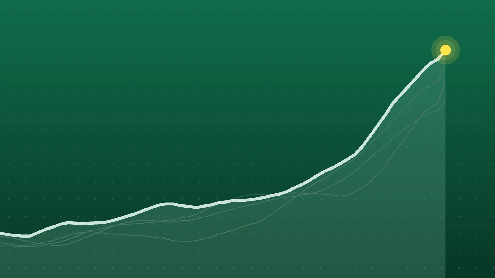

SportsExplainer
NBA Scores, Oct. 26: Cavs Hand Wolves 1st Loss in Overtime
Three teams are now 4-0, Minnesota’s perfect start is over, and Miami is winless after four games for the first time since 2008-09.

Quick take
- Cleveland beat Minnesota 127-125 in overtime despite 47 points from Anthony Edwards, handing the Timberwolves their first loss.
- Rookie Yaxel Lendeborg had 31 points and 12 rebounds and Stephen Curry went 8 for 8 as Golden State won 134-114 at Denver for its first win.
- Oklahoma City, Houston and Memphis all improved to 4-0; Miami fell to 0-4 despite Giannis Antetokounmpo’s first triple-double with the Heat.
- Brandon Miller scored a career-high 39 in Charlotte’s 110-103 win over Washington.
Why it's trending Nine NBA games on Monday, Oct. 26, ended Minnesota’s unbeaten start, gave Golden State and Milwaukee their first wins and left Miami at 0-4.
NBA scores for Oct. 26
Anthony Edwards scored 47 points and still lost. Cleveland came back from 15 down to beat Minnesota 127-125 in overtime, ending the Timberwolves’ 3-0 start, AFP reported. Donovan Mitchell’s jumper in the final minute of overtime put the Cavaliers ahead to stay.
At the other end of the standings, Golden State and Milwaukee got their first wins of the season, while Miami fell to 0-4. Oklahoma City, Houston and Memphis all won to stay perfect at 4-0.
All final scores
| Winner | Score | Loser | Note |
|---|---|---|---|
| Cleveland Cavaliers | 127-125 (OT) | Minnesota Timberwolves | Edwards 47; Mitchell 26, Harden 19 and 9 assists |
| Charlotte Hornets | 110-103 | Washington Wizards | Brandon Miller career-high 39; Anthony Davis 29 and 10 rebounds |
| Boston Celtics | 134-99 | Chicago Bulls | Pritchard 28, 5 of 5 from 3 in the third; Tatum 23 |
| Dallas Mavericks | 113-109 | Miami Heat | Flagg 29 and 11 assists; Antetokounmpo 29-15-11 |
| Milwaukee Bucks | 110-102 | Indiana Pacers | Herro 23, 10 rebounds, 7 assists; Bucks’ first win |
| Oklahoma City Thunder | 125-114 | Phoenix Suns | Ajay Mitchell career-high 30; Gilgeous-Alexander 26 |
| Houston Rockets | 120-110 | Atlanta Hawks | Sengun 29, 9 rebounds, 9 assists; Durant 22 |
| Memphis Grizzlies | 110-105 | Utah Jazz | Jerome’s late free throws; Keyonte George 26 for Utah |
| Golden State Warriors | 134-114 | Denver Nuggets | Lendeborg 31 and 12 rebounds; Curry 24 on 8-of-8 shooting |
Scores from Land of Basketball’s October results and the game recaps linked below.
Cavaliers 127, Timberwolves 125 (OT)
Minnesota led by 10 at halftime, but Cleveland won the third quarter 36-26, SB Nation noted. The game was tied 113-113 after regulation when Edwards’ layup was blocked with four seconds left. In overtime, Edwards hit a 3 with about a minute to go to tie it again before Mitchell answered, and Jonathan Kuminga’s missed free throw with 30 seconds left let Cleveland pull away, according to AFP. Rookie Meleek Thomas scored 16 in his NBA debut. Edwards had been listed as questionable with a right knee issue and was cleared late. Cleveland is 2-1; Minnesota is 3-1.
Warriors 134, Nuggets 114
Golden State avoided its first 0-4 start since 2007-08, AP reported. Rookie Yaxel Lendeborg set career highs with 31 points and 12 rebounds, and Stephen Curry didn’t miss a shot, going 8 for 8 for 24 points, 21 of them after halftime. The Warriors led 60-56 at the break, then scored 74 in the second half and made 22 of their 44 3-point attempts. Denver played the final 8:34 without Aaron Gordon, who was ejected after a double technical, Field Level Media reported. Nikola Jokic had 19 points and 11 assists for the Nuggets (1-2).
Mavericks 113, Heat 109
Giannis Antetokounmpo had 29 points, 15 rebounds and 11 assists, his first triple-double for Miami, but Cooper Flagg had the last word. Back from a one-game absence with a left shoulder injury, Flagg scored 29 with 11 assists and blocked Andrew Wiggins’ 3-point try in the closing seconds to protect a two-point lead, AP reported. Miami missed 11 of its 25 free throws. AP says it’s the fifth 0-4 start in Heat history and the first since 2008-09. Dallas is 2-2.
What it means
The unbeaten list is down to six. Oklahoma City, Houston and Memphis are 4-0. Based on Land of Basketball’s results, Detroit and the Lakers (both 3-0) and Portland (2-0) are also unbeaten and play Tuesday.
- Oklahoma City won without Jalen Williams, Cason Wallace and Chet Holmgren, who sat with tendinitis in his right knee, per ESPN. On Monday the team said Williams will have surgery on a fractured left fibula and a dislocated ankle, and Wallace needs surgery for a torn labrum in his left shoulder, with timelines to follow, AP reported. Alex Caruso sprained his right ankle against Phoenix and didn’t return.
- Houston is 4-0 for the first time since 2014, per AFP, and beat Atlanta for the second time in three days.
- Memphis has opened 4-0 just twice in its history, this season included, Field Level Media said. Utah lost Lauri Markkanen (right wrist) and Jaren Jackson Jr. (right knee) during the game; coach Will Hardy expects imaging results Tuesday, the Deseret News reported.
The winless list: Miami is 0-4, and the same results page shows New York, New Orleans, Brooklyn and Sacramento at 0-3. Milwaukee came back from 11 down at halftime against an Indiana team that had only nine standard-contract players available, IndyStar reported. For Sunday’s games, see our Oct. 25 roundup.
What’s next
Tuesday, Oct. 27, has four games, all times ET, per Land of Basketball:
- Brooklyn at Boston, 7:30 p.m.
- Detroit at New York, 8 p.m.
- Sacramento at San Antonio, 8 p.m.
- Portland at the Lakers, 11 p.m.
Boston is on the second night of a back-to-back after Monday’s rout of Chicago. Detroit and the Lakers put 3-0 records on the line, while Brooklyn, New York and Sacramento try to avoid 0-4 starts. The Pistons’ visit to the Knicks matches an unbeaten team against a winless one.
Sources
- Land of Basketball 2026-2027 NBA Schedule and Scores: OctoberOct. 27, 2026
- Land of Basketball NBA Daily Summary: Oct 27, 2026Oct. 27, 2026
- AFP via Philippine Star Cavaliers survive Edwards' 47 points, nip Timberwolves in overtimeOct. 27, 2026
- SB Nation via Yahoo Sports NBA Final Score - Timberwolves 125, Cavaliers 127Oct. 27, 2026
- Associated Press via Yahoo Sports Lendeborg has 31 points, 12 rebounds as Warriors earn 1st win of season by beating Nuggets 134-114Oct. 27, 2026
- Field Level Media via Deadspin Stephen Curry's perfect shooting night lifts Warriors over NuggetsOct. 27, 2026
- Associated Press via CBS News Miami Dallas Mavericks send reeling Miami Heat to 0-4 with a 113-109 winOct. 27, 2026
- Field Level Media via Deadspin Cooper Flagg returns to put up 29 as Mavericks keep Heat winlessOct. 26, 2026
- ESPN Ajay Mitchell, Shai Gilgeous-Alexander lead injury-riddled Thunder past Suns 125-114Oct. 26, 2026
- Associated Press via Oskaloosa Herald Sengun has 29 points as Rockets stay unbeaten with 120-110 win over HawksOct. 26, 2026
- Field Level Media via Deadspin Ty Jerome's late free throws carry Grizzlies past JazzOct. 27, 2026
- Deseret News 2 Jazz stars sustain injuries — and 2 other takeaways from Utah's loss to Memphis GrizzliesOct. 26, 2026
- Associated Press via Live 5 News Brandon Miller scores career-high 39 points as Hornets beat Wizards 110-103Oct. 26, 2026
- Associated Press via Boston.com Pritchard scores 28 points and has red-hot 3rd quarter to carry Celtics to 134-99 rout over BullsOct. 26, 2026
- IndyStar via Yahoo Sports Pacers blow 11-point halftime lead, lose 110-102 to previously winless BucksOct. 27, 2026
- Associated Press via WRAL Thunder's Jalen Williams will need surgery for a broken leg and dislocated ankleOct. 26, 2026
Keep reading

NBA Scores, Oct. 21: Edwards’ 45 Spoils Giannis’ Heat Debut
NBA scores for Oct. 21, 2026: all 11 final results, including Anthony Edwards’ 45 in Miami, Ty Jerome’s 45 for Memphis and Raptors 135, Bulls 92.

NBA Scores, Oct. 25: Doncic Scores 52 as Lakers Stay Unbeaten
NBA scores for Oct. 25, 2026: all 7 finals, including Luka Doncic’s 52 in a Lakers win at Utah, Detroit’s win in Philadelphia and the Knicks’ 0-3 start.

NBA Scores, Oct. 24: Nuggets Erase 23-Point Gap to Win in OT
NBA scores for Oct. 24, 2026: all 8 finals, including Denver’s 141-135 overtime comeback over New Orleans, Booker’s 43 for Phoenix and Philadelphia’s 3-0 start.